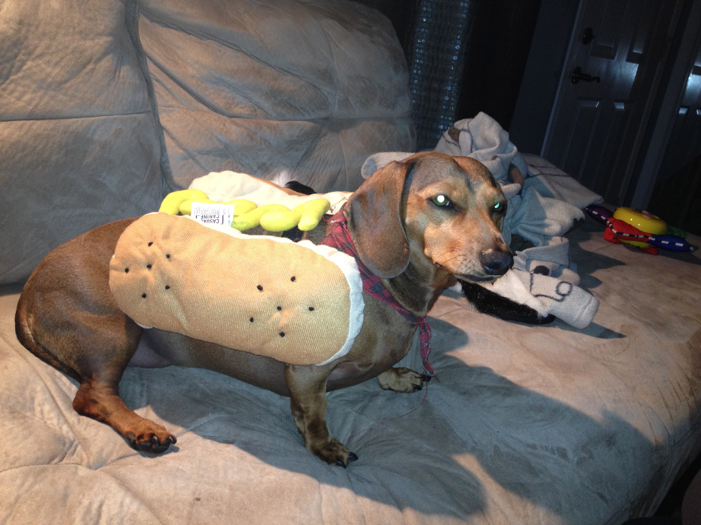

Présentation
Le teckel, originaire d'Allemagne, était à l'origine utilisé pour la chasse aux blaireaux, qu'ils délogeaient de leurs terriers. Son nom vient du mot Dachs, blaireau en allemand, par l'intermédiaire de Dachselhund chien à blaireau. Le nom anglais dachshund est plus proche de la version originelle allemande, alors que les Allemands utilisent actuellement Dackel plus proche du mot français. Les premiers spécimens ont vu le jour au xviie siècle et les variétés de la race ont continué à se développer jusqu'au xixe siècle. Ses ancêtres sont les brackens ou encore les brachets. Avec trois variétés de poils (ras, dur et long), trois tailles (kaninchen, nains et standards) et trois coloris (unicolore, bicolore ou merle (il est erroné de dire arlequin)). On a aussi pu observer, sur des fresques égyptiennes, des représentations de chiens identiques, à la seule différence qu'il avait les oreilles droites et non tombantes.
